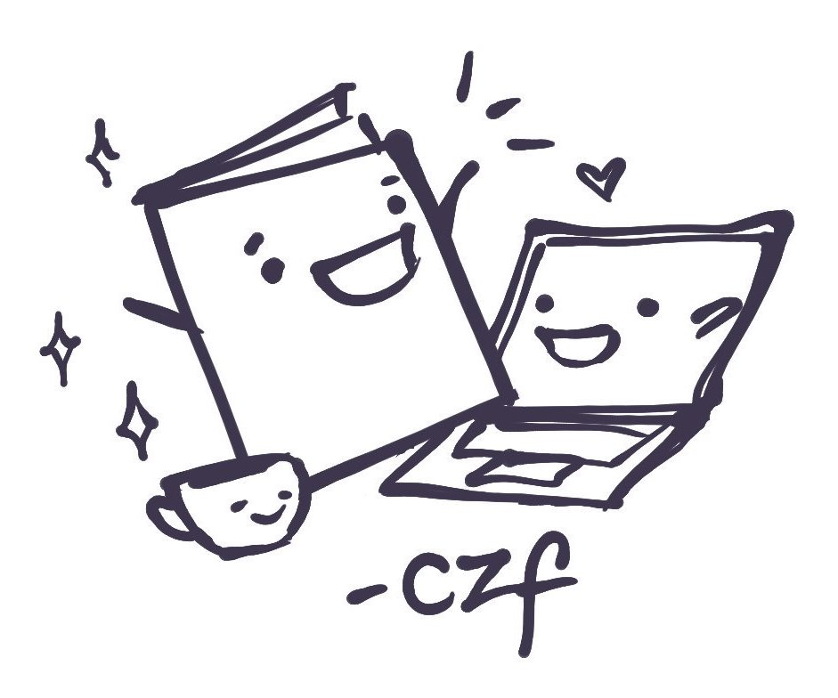

Exhibitors
We have 15 incredible exhibitors, showing things like technology tutorials, programming manifestos, catalogs of interesting techniques, unusual approaches to interactive media/game design, digital illustrations and prints, and even a dissertation zine:
- Devi Acharya -> Devi Acharya is a game developer and researcher currently pursuing her Ph.D. in Computational Media at the University of California – Santa Cruz. Her work focuses on interactive fiction and storytelling in games, particularly how we can create game systems that help players to tell stories in new ways. You can find her work at her website, www.devi-a.com, or follow her on Twitter at @dacharya64.
- Awkward Ladies Club/Amy Burek -> My interests include how cells become organisms, how letters become words, and how cat pictures become memes. I am interested in exploring how technology has shaped the ways we communicate, interact with each other, and perceive ourselves. I find the divide between our virtual and physical selves fascinating and feel that the wackiest corners of the internet deserve documentation.
- Kate Compton -> showing poets how to do AI, so the poets can show us how to do AI.
- Caitlyn Crites -> I refer to myself as a visual designer these days, because it’s the quickest way to say I’ve done everything from murals to icon systems. I fell in love with type + lettering while working as a sign maker at a San Francisco grocery store, and have spent the past two years learning all I can about the craft and history of making letters. Perpetually drawn to niche subjects that encourage multi-disciplinary overlap, I’m especially interested in the possibilities of type combined with illustration, animation, creative code, and 3D/virtual experiences.
- Erika Dunn -> character designer & worldbuilder
- Cyril Focht -> Cyril Focht is a masters student in computational media at UC Santa Cruz. He has been described as "the weirdest person I've ever met... in a good way" and it shows in his creative work.
- Melanie Dickinson -> Melanie is a computational media maker and researcher, and PhD student in the Expressive Intelligence Studio at UCSC, focused on making experiences that help people engage personal meaning using playfulness, generative methods, and AI. Also loves crafting, woodcarving, cuteness, and community organizing. On Twitter @meldckn and Instagram @meldckn.
- Max Kreminski
- Amanda Leiserowitz -> Amanda is an Art & Design: Games and Playable Media / Literature: Creative Writing undergrad at UCSC! She loves working in every art medium available to her.
- Robert P. Levy -> Robert is practicing software engineer with a background in embodied cognitive science and cybernetics.
- Joseph Lukasik -> Joseph is a noosphere pioneer.
- emma rae norton -> emma "doodybrains" rae norton is a web developer and artist researching what the internet looks like
- Jasmine Otto -> Jasmine writes explorable explanations of ecological geometries. She is especially interested in latent spaces of artifact-generating rules, and how these are actively refactored by creators.
- Daisy Tsang -> I’m a software developer and writer. I love open-source software, community work, learning new technologies, picking up new natural languages, knitting, and baking.
- Reshma Zachariah -> Reshma has been a digital painter since she first got her grubby hands on Photoshop in 2002 (she was 6 years old.) Now, she's Editor in Chief at Play! Magazine, an upcoming publication at UCSC featuring digital artists from all over campus. Check out her stuff at reshmazachariah.weebly.com or follow her on Instagram, @reshmaszart